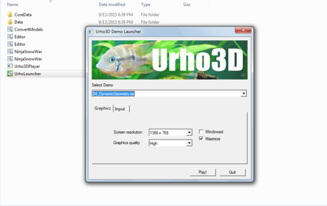

Hey guys,
I thought I’d shared this simple Demo Launcher Utility (Windows Only) to help first-time users conveniently try out all the demos and at the same time a handy utility for regular scripters.
What Works:
- Select and launch a demo script, close, rinse and repeat.
- Player window starts maximized and resizable.
- Resolution dropdown scans your top graphic card resolutions only (starting from 1024px width range, not yet fully operational).
To include Lua at this time, just move it up in Scripts directory. I kept it minimal for this release but obviously there’s more to dos.
Just place this where Urho3DPlayer resides. It will scan only the ‘Scripts’ directory and generate a list and then after selection, it just shell executes this pattern “Urho3DPlayer.exe Scripts/” %selection% " -w -s".
Some of the options are not yet applicable at the moment because this was originally a game launcher template (UI derived from Unity) that I created a year ago and so have decided to put it to some good use here.

Download Link: rasteron.itch.io/urho3d-demo-launcher
Enjoy!


{kind=link}